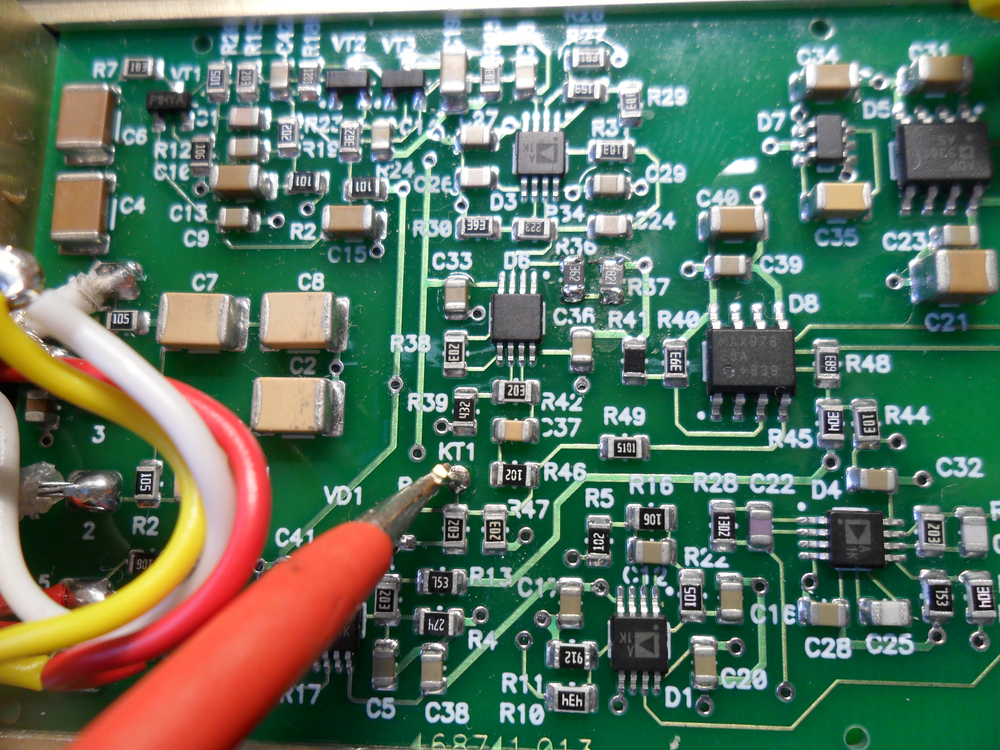
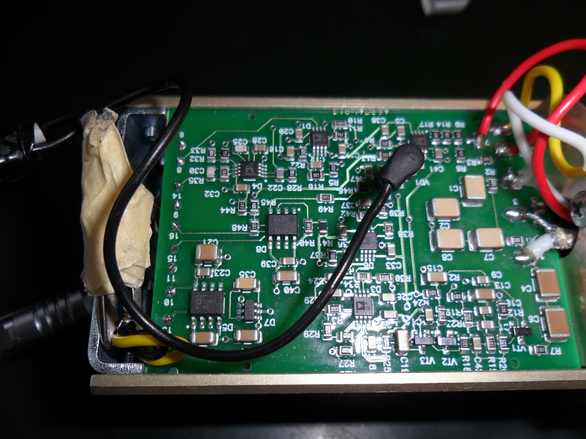
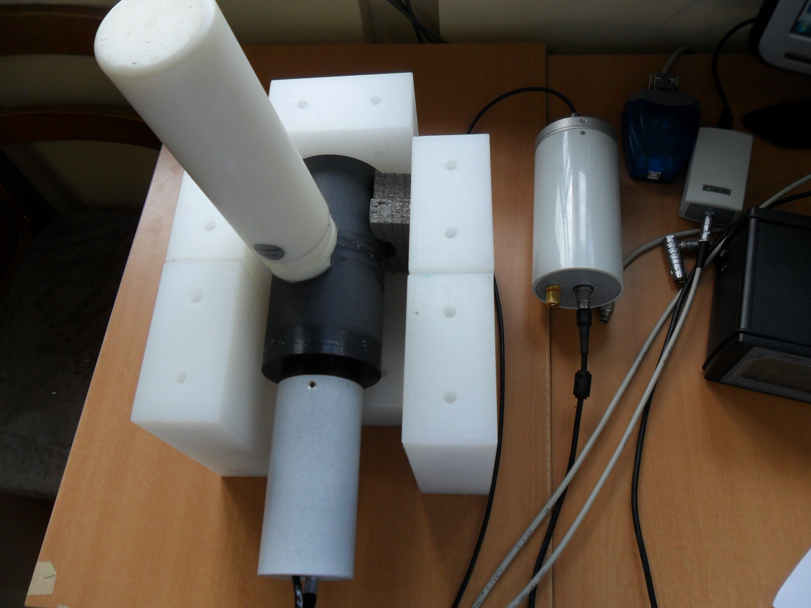
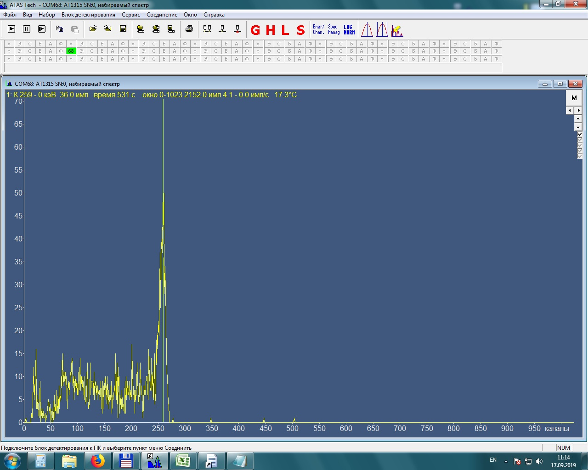
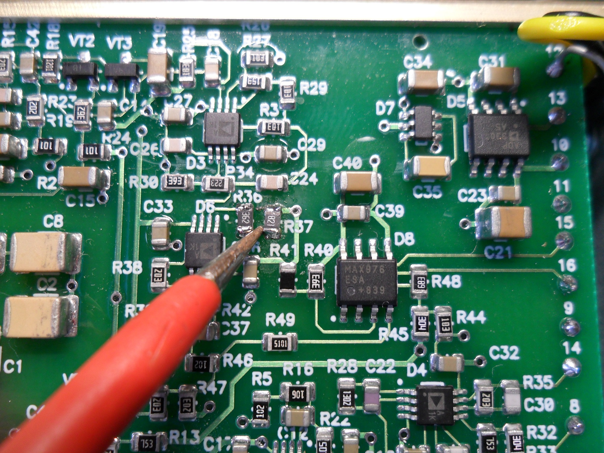

БДКН-03
- изначально прошита от БДКН-1, надо прошить на БДКН-3
- припаять ножку pls разъема к точке КТ1

- подключить вход ацп к припаяному разъему PLS (КТ1), подключить разъем ODU к БОИ

- Экран установить на БД.

- включаем БОИ , запускаем ATAS, спектр долчен быть как на рисунке
(259 канал +5%-3% т.е. диапазон 255-270канал)

если канал не соответствует — регулируем усиление подбором резистором R36, R37
расчет в файле или воспользоваться формой:

записываем серийный номер при помощи Background calibration
проверяем фон- подключаем к бои , ставим вдали от источников, за час должен набрать не более 40нЗ при 5%
клеиим малярку на торец, пишем номер прибора, канал, фон (прошел-нет)
отдаем на заливку
берем экраны у юры мороз и несем на монтаж и корпуса
проверяем фон- подключаем к бои , ставим вдали от источников, за час должен набрать не более 40нЗ при 5%
отдаем на линейку